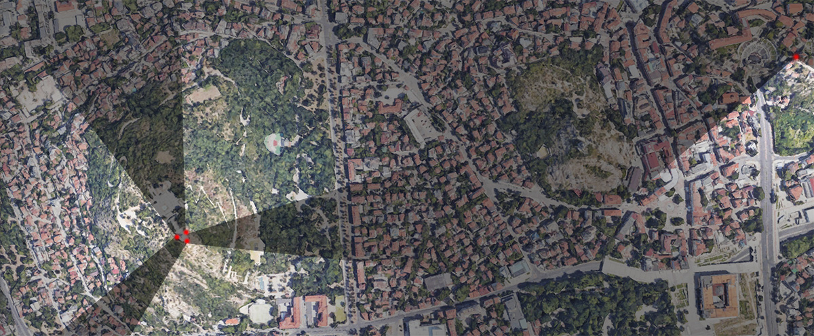

An Architectural Fiction of plovdiv
By incorporating panoramic photography, speculative urban design, AI image generation, and Web-VR development, this project aims to visualize alternative cityscapes of Plovdiv’s canceled futures from its communist past. The resulting Web-VR scenes will match selected views from Plovdiv’s two iconic hills: Dzambaz Tepe above the touristy old town and Burnardzhika Tepe that overlooks the greater metropolitan area. The viewpoint selection is made with curatorial measures for the project’s on-site access: the former will serve as a tourist hook to introduce the concept and the latter will deliver a panoramic experience of Plovdiv’s alternative cityscapes. When visiting these viewpoints, audiences will find QR-code access to the corresponding scenes and see Plovdiv’s urban transformation into its canceled futures on their mobile devices, meanwhile having the real-world counterpart to complete the immersive experience. The Web-VR pages also include map guidance that will navigate audiences to visit the other site across the city.
 The 5 selected viewpoints for Web-VR experience. Examples of views to be transformed.
Examples of views to be transformed.Given the digital nature of the project and my goals to minimalize the project's visual and environmental impacts,
the on-site installation will take the form of stickers that contain QR-code accesses and descriptions of the corresponding Web-VR scenes.
While waiting for project to be installed in November 2023, please enjoy my working demo for the viewpoint of Dzambaz Tepe below.
It is encouraged to go to the back terrace of Dzambaz Tepe and match the Web-VR scene with your real-world view for immersive experience.
Otherwise, just imagine yourself standing on site and have fun :)